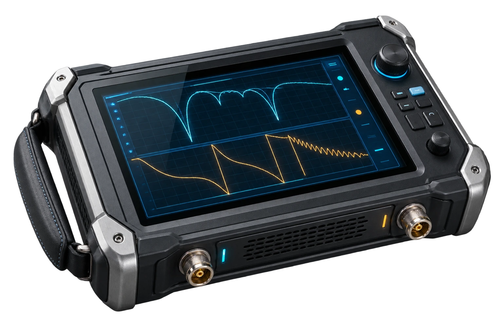

TPMS、等效张量、前缘铺设、表面电流与远场 RCS。
POST-REPAIR ELECTROMAGNETIC VERIFICATION
From repair site
to RCS evidence
飞机隐身修复效果原位近场评估
以便携式双极化微波探头扫描修复区域，保留多频复数幅相，连接局部修复差异、内部损伤筛查与潜在远场影响。
RCS DESIGN→REPAIR→NEAR FIELD→ASSESSMENT
CLOSE THE STEALTH LIFE-CYCLE LOOP
把“设计—制造—修复—验证”连成闭环
Stealth Lab 原有八阶段链路解释微观结构如何影响整机 RCS；AeroRepair Scan 作为第九模块，补充结构服役与修复后的现场验证环节。
表面几何、胶层和蜂窝芯状态共同影响局部电磁响应。
扫描修复区与周边完好蒙皮，形成差分近场证据。
将复核结果反馈至数字孪生、工艺记录与后续设计。
SYSTEM ARCHITECTURE
核心设备组成
两类主设备负责相干采集，位姿、边缘计算和参考数据库提供几何、处理与证据链支撑。
PRIMARY HARDWARE · 01
NEAR-FIELD ACQUISITION
01
MICROWAVE PROBE
双极化微波探头
发射并接收宽带相干响应，支持正交或共/交极化概念测量，覆盖修补区及周边完好蒙皮。
PRIMARY HARDWARE · 02

COMPLEX S-PARAMETERS
02
VECTOR NETWORK ANALYZER
便携式矢量网络分析仪
获取宽频复数 S 参数，在扫描链路中同步保留幅值与相位，为差分近场分析提供数据基础。
扫描网格 局部异常响应
位姿与距离感知
跟踪探头位置、方向和离表距离，为曲面扫描、坐标映射与相位修正提供基准。
边缘计算终端
完成扫描控制、实时热图、快速分析与结果显示，承接现场人机协同。
数字孪生与参考数据库
保存完好参考状态，关联修复差异与潜在远场影响，并记录证据版本。
FIELD WORKFLOW
从参考状态到复核建议
流程强调复数幅相、参考状态、局部到整体的证据传递，以及微波筛查与超声复核的职责边界。
- 01REFERENCE导入参考状态
完好测量、历史基准或数字孪生版本。
- 02CALIBRATE现场校准
背景扣除、探头校准与状态检查。
- 03SCAN人机协同扫描
覆盖修补区与周边完好蒙皮。
- 04RECONSTRUCT复数近场重建
幅相、位姿与曲面信息对齐。
- 05INFER双任务评估
修复效果评价与内部损伤筛查。
- 06REPORT影响与复核报告
潜在 RCS 趋势、证据状态与复核建议。
INTERACTIVE CONCEPT SCAN
原位扫描概念演示
使用与原 Gradio 版本一致的六种场景和控制范围，在浏览器内生成可复现的静态站点模拟结果。
扫描就绪
100%
COMPLEX NEAR-FIELD DIFFERENCE归一化坐标 · 模拟 Δ|E|
FIELD NOTE / SYNTHETIC
概念评估摘要
PHYSICAL BASIS
局部证据如何连接远场影响
公式用于解释证据链，不公开具体校准算子、探头参数、反演权重或工程阈值。
01局部阻抗与反射
Γᵖ = (Zᵢₙᵖ − Z₀ᵖ) / (Zᵢₙᵖ + Z₀ᵖ)
修补材料、胶层、脱粘和蜂窝损伤改变局部输入阻抗，进而改变反射幅值和相位。
02修复差分近场
ΔENF = Erepair − Ereference
相对于完好参考状态聚焦新增扰动，避免把复杂整机绝对散射直接归因于单点响应。
03等效表面电流
ΔJs = n̂ × ΔH · ΔMs = −n̂ × ΔE
将曲面附近的差分近场转写为等效源，为局部到远场的连接建立桥梁。
04相干远场叠加
E∞repair ≈ E∞intact + ΔE∞local
保留复数相位，使局部修复散射与其他散射中心能够相干增强或抵消。
MODULE BOUNDARY
快速筛查、证据组织与复核闭环
微波近场扫描用于快速原位筛查和电磁影响辅助评价。需要精确几何定量的内部缺陷，应由经过验证的超声等方法复核。
六种合成场景、热图、指标、摘要、响应式设备展示。
VNA、探头、位姿、校准、反演、数字孪生和报告审批。